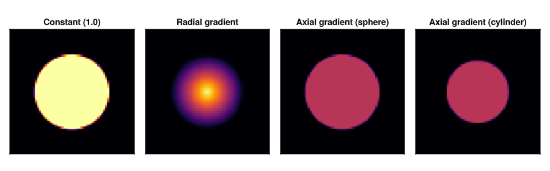

Fill functions
A fill function maps a shape's local coordinates to a value. Three are built in; any isbits-compatible callable works.

Built-in fills
ConstantFill(value) gives every voxel inside the shape the same value. This is what the convenience constructors use when you pass a scalar.
RadialGradient(inner_value, outer_value) interpolates from inner_value at the shape center (r = 0) to outer_value at the surface (r = 1).
AxialGradient(axis, v0, v1) interpolates along one local axis: v0 at the negative end, v1 at the positive end. axis is 1, 2, or 3 (the local coordinate index).
Usage
The convenience constructors (FillableSphere, FillableCuboid, etc.) accept only a scalar fill_val. To use a gradient fill, pass the fill function directly to the inner struct constructor:
using VoxelShapes
using StaticArrays: SVector
c = SVector{3,Float64}(0.5, 0.5, 0.5)
r = SVector{3,Float64}(0.3, 0.3, 0.3)
interp = LinearInterpolation()
# Radial gradient: bright core, dark shell
f = RadialGradient(1.0, 0.0)
sphere = FillableEllipsoid{Float64, typeof(f), typeof(interp)}(c, r, f, interp)
# Axial gradient along local z: dark bottom, bright top
f = AxialGradient(3, 0.0, 1.0)
sphere = FillableEllipsoid{Float64, typeof(f), typeof(interp)}(c, r, f, interp)See examples/03_fills.jl for complete working code.
Custom fill functions
Any callable that takes an NTuple{3} of local coordinates and returns a value works. The one constraint is isbits compatibility (required for GPU use). Closures that capture heap-allocated objects won't run on the GPU.
# A checkerboard pattern in local space
struct Checker
scale::Float64
end
(f::Checker)(lc) = iseven(floor(Int, lc[1] * f.scale) + floor(Int, lc[2] * f.scale)) ? 1.0 : 0.0See the API reference for full signatures.